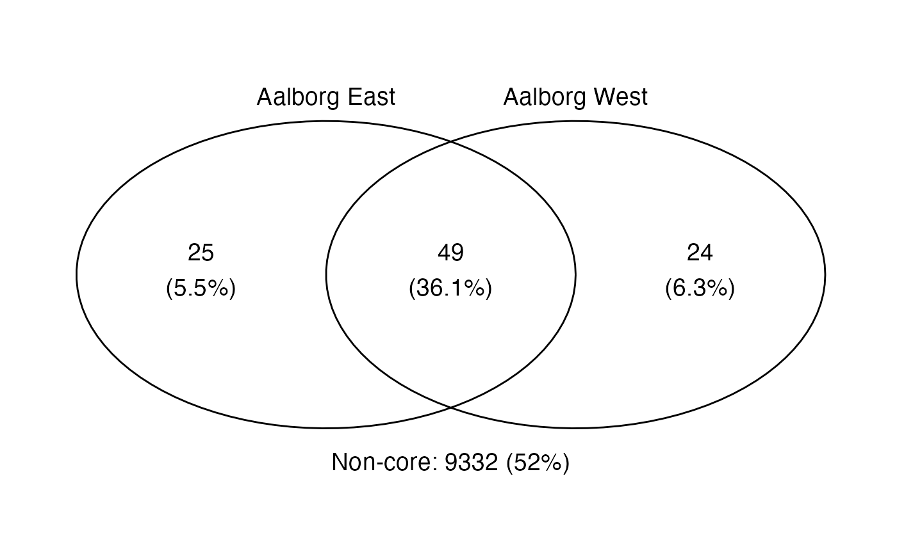

Calculates the number of "core" OTUs shared by groups given thresholds for how frequent the OTUs should be above a certain abundance. Also returns the average abundance of the OTUs in a particular group.
amp_venn( data, group_by = NULL, cut_a = 0.1, cut_f = 80, text_size = 5, normalise = TRUE, detailed_output = FALSE )
| data | (required) Data list as loaded with |
|---|---|
| group_by | Group the data based on a sample metadata variable. |
| cut_a | Abundance cutoff in percent. OTU's below this abundance are excluded from the analysis. (default: |
| cut_f | Frequency cutoff in percent. OTU's within the top |
| text_size | Size of the plotted text. (default: |
| normalise | (logical) Normalise the OTU read counts to be in percent per sample. (default: |
| detailed_output | (logical) Return additional details or not. If |
A ggplot2 object.
See ?amp_subset_samples or the ampvis2 FAQ.
[Saunders et al, 2016](https://www.nature.com/articles/ismej2015117)
Kasper Skytte Andersen ksa@bio.aau.dk
Mads Albertsen MadsAlbertsen85@gmail.com
# Load example data data("AalborgWWTPs") # Venn diagram grouped by WWTP amp_venn(AalborgWWTPs, group_by = "Plant")